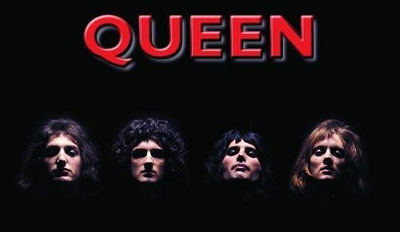

English by songs
Bands
- Queen — британская рок-группа, добившаяся широчайшей известности в середине 1970-х годов, и одна из наиболее успешных групп в истории рок-музыки. Средства массовой информации называют группу «культовой» и пишут, что она и по сей день имеет сотни миллионов поклонников.
Singers
Video With Lyrics
I WANT IT ALL
скачатьIT'S A KIND OF MAGIC
скачатьWE WILL ROCK YOU
скачатьSHOW MUST GO ON
скачатьTexts Songs
-
I WANT IT ALL
Original
I want it all[3x].....and I want it now! Adventure seeker on an empty street Just an alley creeper, light on his feet A young fighter screaming, with no time for doubt With the pain and anger can't see a way out It ain't much I'm asking, I heard him say Gotta find me a future move out of my way I want it all, I want it all, I want it all, and I want it now[2x] Listen all you people, come gather round I gotta get me a game plan, gotta shake you to the ground But just give me, huh, what I know is mine People do you hear me, just gimme the sign It ain't much I'm asking, if you want the truth Here's to the future for the dreams of youth I want it all[3x].....and I want it now![2x] I'm a man with a one track mind So much to do in one lifetime (people do you hear me) Not a man for compromise and where's and why's and living lies So I'm living it all, yes I'm living it all ...
Translate
Я хочу все…и сейчас! Любитель приключений на пустой улице Как будто ходит по аллее с фонарем в руках Крик молодого бойца, некогда сомневаться Чувствуя боль и злость, он не видит выхода Я немного прошу, я слышал его слова Я хочу обрести счастье, уходи с дороги Я жажду все, я жажду все, я жажду все…и сейчас Я жажду все, я жажду все, я жажду все…и сейчас Послушайте, люди, соберитесь Мне нужен план игры, он встряхнет вас Отдайте мне то, что принадлежит только мне Люди, вы меня слышите, дайте мне знак Я не много прошу, если честно За будущее, за мечты молодых Я хочу все Я хочу все Я жажду все, и сейчас Я человек, который думает только лишь об одном Еще столько надо сделать в жизни (люди, вы меня слышите) Не иду на компромисс, а ваши вопросы где и почему ...
-
IT'S A KIND OF MAGIC
Original
It's a kind of magic[2x] A kind of magic One dream one soul one prize one goal One golden glance of what should be It's a kind of magic One shaft of light that shows the way No mortal man can win this day It's a kind of magic The bell that rings inside your mind Is challenging the doors of time It's a kind of magic The waiting seems eternity The day will dawn of sanity Is this a kind of magic It's a kind of magic There can be only one This rage that lasts a thousand years Will soon be done This flame that burns inside of me I'm hearing secret harmonies It's a kind of magic The bell that rings inside your mind Is challenging the doors of time It's a kind of magic It's a kind of magic
Перевод
Это вроде магии[2x] Вроде магии Одна мечта, одна душа, один приз, одна цель, одна золотая вспышка того, что должно быть Это вроде магии Один луч света, что покажет путь Ни один смертный человек не может одолеть этот день Это вроде магии Колокольчик, что звенит в твоей голове, бросает вызов дверям времени Это вроде магии Ожидание кажется вечностью День пробудит здравомыслие Это вроде магии Это вроде магии Там можешь быть только один Эта ярость, что длится тысячу лет Вскоре закончится Это пламя, что горит во мне Я слышу таинственную гармонию Это вроде магии Колокольчик, что звенит в твоей голове, бросает вызов дверям времени Это вроде магии Это вроде магии
-
WE WILL ROCK YOU
Original
Buddy you're a boy make a big noise Playin' in the street gonna be a big man some day You got mud on yo' face You big disgrace Kickin' your can all over the place We will we will rock you Singin' We will we will rock you Buddy you're a young man hard man Shoutin' in the street gonna take on the world some day You got blood on yo' face You big disgrace Wavin' your banner all over the place Singin' We will we will rock you[2x] Buddy you're an old man poor man Pleadin' with your eyes gonna make you some peace some day You got mud on your face You big disgrace Somebody better put you back into your place We will we will rock you[2x]
Перевод
Дружок, ты еще малыш, но так сильно шумишь. Играя на улице, мечтаешь когда-нибудь вырасти. У тебя грязь на лице, Ты просто позорище. Гоняешь свою консервную банку повсюду, Напевая: Мы вам покажем![2x] Дружище, ты молодой парень, очень крутой. Кричишь на улице, когда-нибудь ты сразишься со всем миром. У тебя кровь на лице, Ты просто позорище. Машешь повсюду своим флагом, Напевая: Мы вам покажем![2x] Дружище, ты старик, бедняк. В твоих глазах мольба. Когда-нибудь ты обретешь покой. У тебя грязь на лице, Позорище. Кто-нибудь, засуньте его туда, откуда он взялся! Мы вам покажем![2x]
-
SHOW MUST GO ON
Original
Empty spaces - what are we living for? Abandoned places - I guess we know the score.. On and on! Does anybody know what we are looking for? Another hero - another mindless crime Behind the curtain, in the pantomime. Hold the line! Does anybody want to take it anymore? The Show must go on! The Show must go on!Yeah! Inside my heart is breaking, My make-up may be flaking, But my smile, still, stays on! Whatever happens, I'll leave it all to chance. Another heartache - another failed romance. On and on... Does anybody know what we are living for? I guess i'm learning I must be warmer now.. I'll soon be turning, round the corner now. Outside the dawn is breaking, But inside in the dark I'm aching to be free! ...
Перевод
Пустые пространства — зачем мы живем? Покинутые места — ты знаешь результат... Вперед, вперед! Кто-нибудь знает, что мы ищем? Новый герой — новое бессмысленное преступление Там, на заднем плане, в пантомиме. Не вешайте трубку! Кто-нибудь может это выдержать? Пусть шоу продолжается! Пусть шоу продолжается! Да! И пусть мое сердце разрывается, И грим, может быть, осыпается, Но улыбка до сих пор на моих губах. Что бы ни случилось — все на волю случая. Новая боль в сердце — новый неудачный роман. Вперед, вперед... Кто-нибудь знает, зачем мы живем? Я все еще учусь Думаю, я стал мягче... Уже очень скоро я буду за поворотом Снаружи брезжит рассвет, Но здесь, во тьме, я сквозь боль рвусь к свободе ...